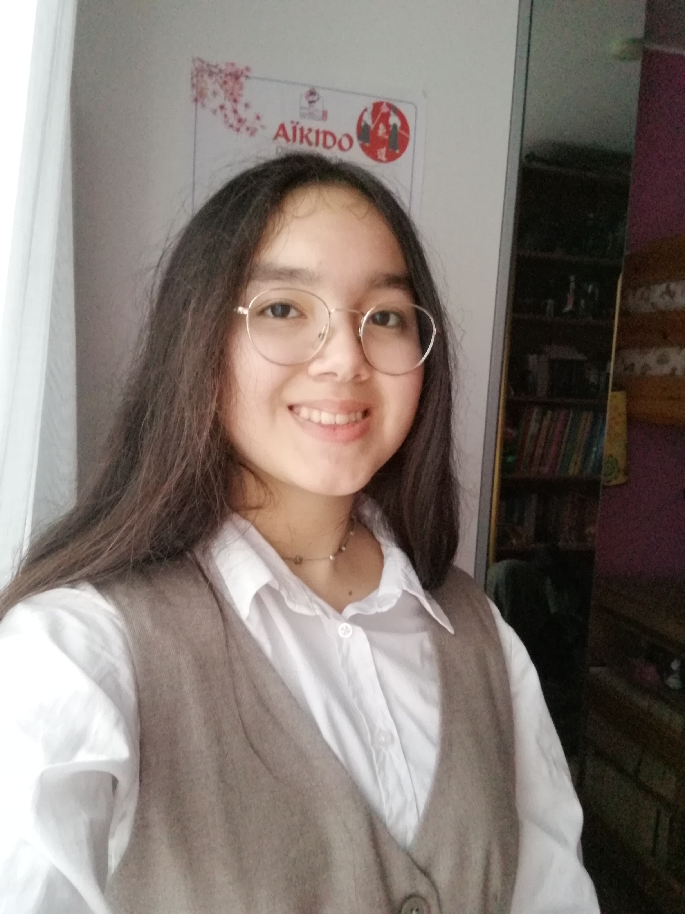

Liz BRICOUT
Passionnée par le monde du spectacle, j'aimerais approfondir ma connaissance du milieu
professionnel dans les domaines des arts de la scène et du théâtre.
Informations personnelles
- Date de naissance : 3 janvier 2010
- Adresse e-mail : liz.bricout@gmail.com
- Téléphone : 07 82 86 52 62
- Adresse : Avenue de Mormal, 59000 LILLE
Etudes et diplômes
2025
Lycée La Salle
- Langues vivantes : Anglais, Allemand
- Option Cinéma-Audiovisuel
- Option Anglais Euro : DNL Histoire-Géographie
Collège Saint-Jean La Madeleine
- Brevet des collèges - Mention "Très bien avec félicitations du jury"
- Certificat Voltaire :
888 points (code de vérification : YM64RU7)
2022-2025
Expériences
2024-2025
2022-2025
2021-2025
- Membre de la chorale du collège
2024
- Stage d'observation - IDAIA Group :
découverte de divers services tels que le droit des affaires, les ressources humaines, le web design ou l'administration des ventes
2022-2024
- Membre du journal du collège
Qualités
- Autonomie
- Patience
- Rigueur
- Curiosité
- Créativité
Centres d'intérêts
- Littérature
- Musique et spectacles
- Dessin
- Aïkido